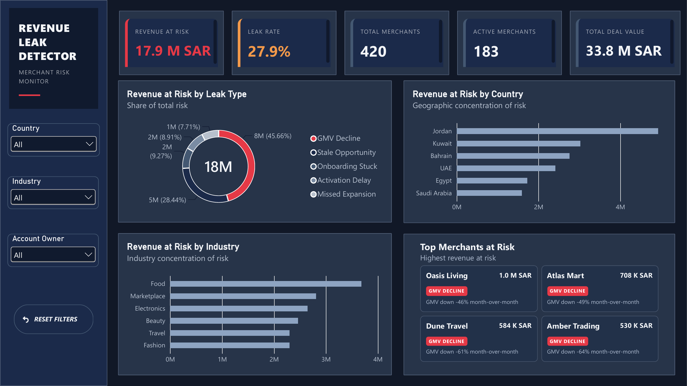
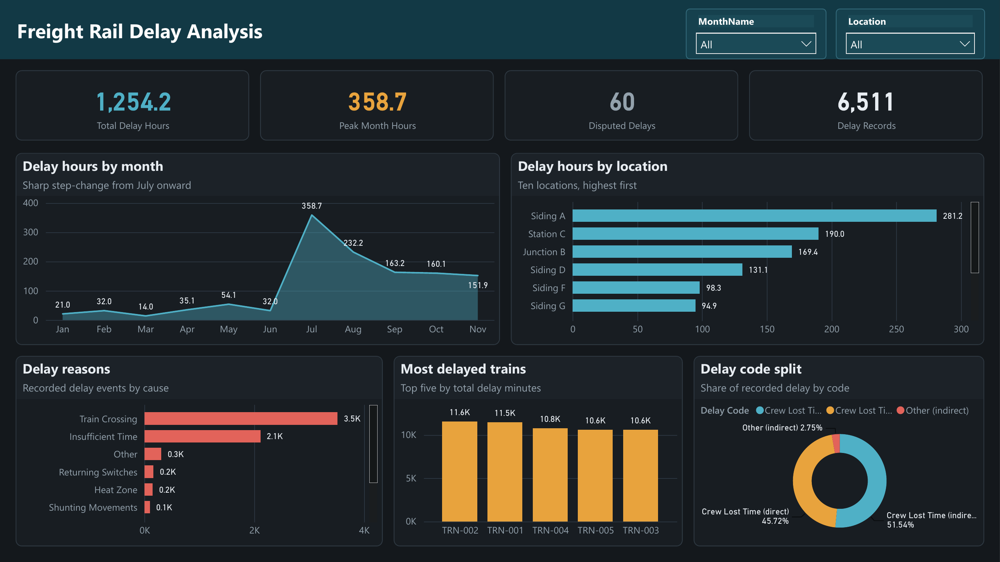
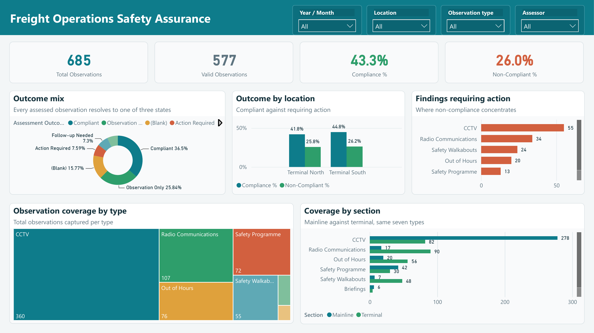

Saudi Labor Market Quarterly Outcomes Monitor
Tracks unemployment, participation, and employment across time, regions, age bands, and education levels using official GASTAT Labour Force Survey data.
Read case studyData & Business Intelligence Analyst · Dammam, Saudi Arabia
Power BI dashboards, data models, and reporting workflows built to make complex operations clear, measurable, and easier to improve.
Selected work
Each case study explains the business question, analytical approach, data context, and decisions supported by the dashboard.
Tracks unemployment, participation, and employment across time, regions, age bands, and education levels using official GASTAT Labour Force Survey data.
Read case study
Brings multiple merchant-risk signals into one prioritization view so commercial teams can move from exposure totals to the accounts requiring attention.
Read case study
Consolidates monthly extracts to reveal when delay changed, where it concentrates, and which causes and services should be investigated first.
Read case study
Monitors observation coverage and compliance, then surfaces the finding types and operational sections that need corrective action.
Read case studyAbout
I am a Data and Business Intelligence Analyst with a Computer Information Systems background and hands-on experience in operational analytics, reporting automation, and process improvement. During my Tamheer program at Saudi Railway Company, I built dashboards and digital workflows across freight, yard, and safety operations.
My work combines data modeling and visualization with a practical understanding of how teams collect information, coordinate decisions, and act on exceptions. I care about clear definitions, reliable calculations, and reports that help users decide what to do next.
Power BI, DAX, Power Query, data modeling, KPI design
SQL, Excel, Python, Pandas
Airtable, REST APIs, SharePoint, reporting automation
Experience
Saudi Railway Company · Dammam
Arab National Bank · Khobar